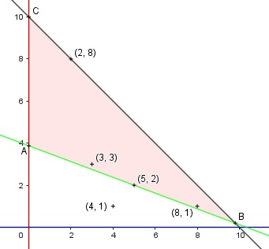

Aufgabe 67 Für den Abtransport von 31 t Bauschutt stehen 2 Lkws zur Verfügung. Der eine kann 3 t, der andere 8 t laden. Geben Sie 3 Möglichkeiten für den Lkw Einsatz an, wenn höchstens 10 Fahrten vorgeschrieben sind. x = Anzahl 3 t y = Anzahl 8 t Bedingungen: 1. x > 0 x ∈ ℕ 2. y > 0 y ∈ ℕ 3. x + y ≤ 10 4. 3x + 8y ≥ 31

Die Eckpunkte A, D und F bilden das Planungs- gebiet, das alle Ungleichungen erfüllt. Die Punkte (3|3), (5|2), (2|8) und (8|1) liegen im Planungsgebiet und erfüllen die Bedingungen. Der Punkt (4|1) liegt außerhalb und erfüllt sie nicht. Punkt (3|3), 6 Fahrten: 3 * 3 + 3 * 8 = 33 > 31 Punkt (5|2), 7 Fahrten: 5 * 3 + 2 * 8 = 31 Punkt (2|8), 10 Fahrten: 2 * 3 + 8 * 8 = 70 > 31 Punkt (8|1), 9 Fahrten: 9 * 3 + 1 * 8 = 35 > 31 Punkt (4|1), 5 Fahrten 4 * 3 + 1 * 8 = 20 < 31 nicht erfüllt